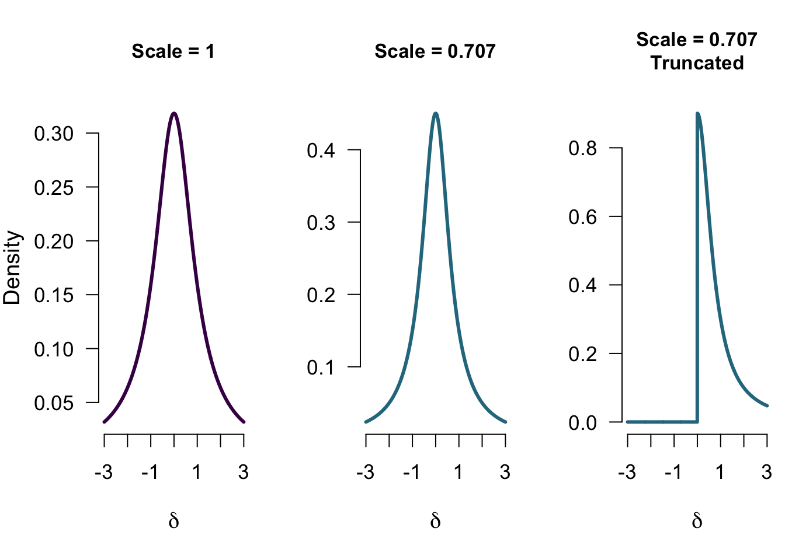
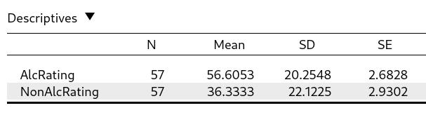
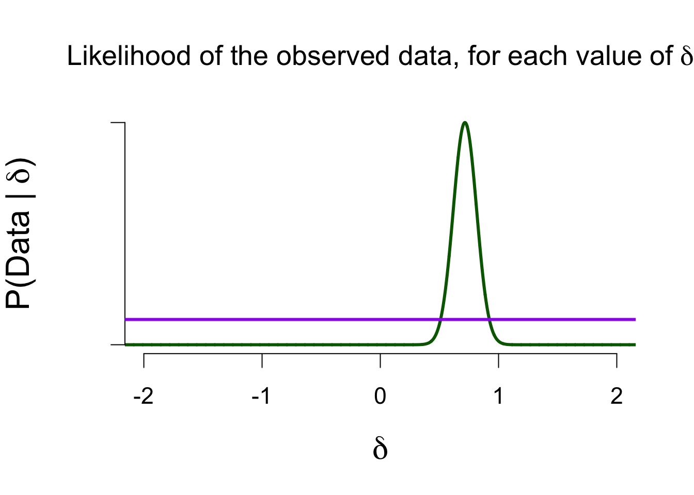
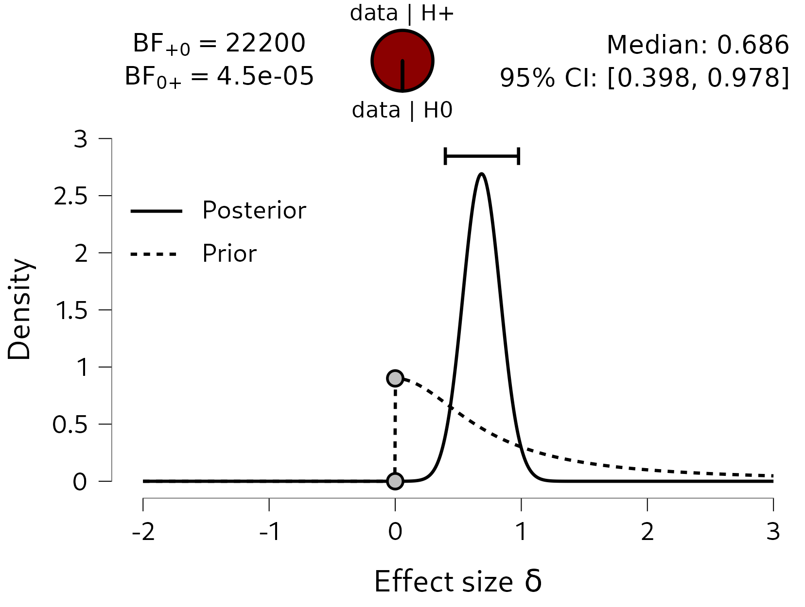
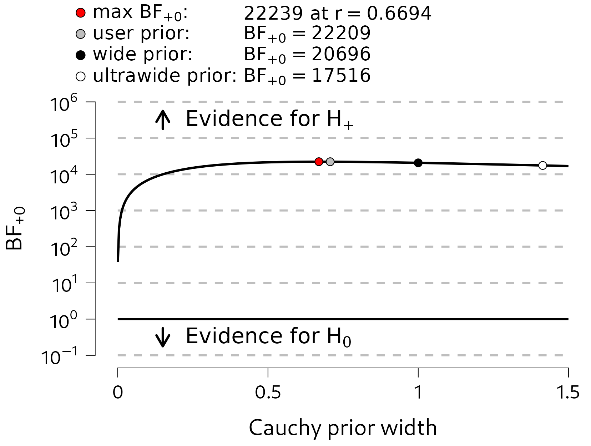
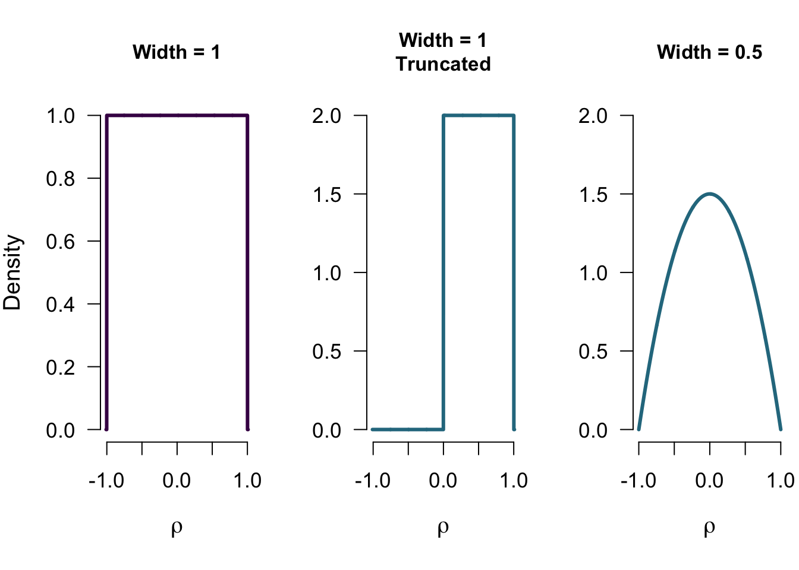
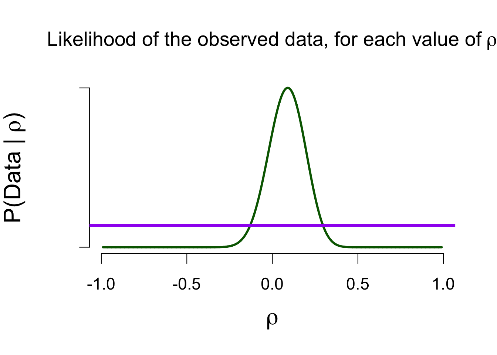
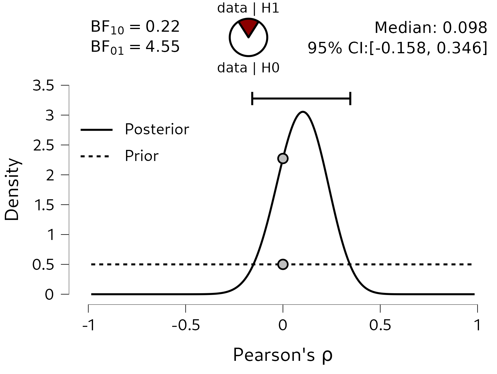

5 More Bayesian Analyses
All of the concepts that were discussed in the previous chapters can also be applied to Bayesian analyses for other types of research questions, such as correlations or differences in means (i.e., the \(t\)-test). In the current chapter, we will explore these tests using the same beer-tasting data set. Besides measuring whether participants identified the correct beer, we also recorded how tasty they found each of the two beers, which we can use to answer the following two questions:
- Do people find alcoholic beer tastier?
- Is there an association between tastiness ratings?
5.1 The Bayesian T-Test
The first question, “do people find alcoholic beer tastier?”, concerns the difference between means. Since each participant tasted the alcoholic and non-alcoholic beer, this was measured within subjects, and so a within subjects \(t\)-test is required. For Bayesian \(t\)-tests, the parameter of interest is denoted \(\delta\) (“delta”). This parameter is a standardized difference between two means, and is formally known as “Cohen’s d”, a very common effect size in psychology.1 When doing inferential statistics, we can either estimate the magnitude of this effect size, conduct model comparison, or both. In the sections below, the Bayesian ingredients are described for the \(t\)-test.
5.1.1 Prior Distribution
The prior distribution is always defined on the same domain as the parameter of interest. For the proportion, this was the convenient domain of [0, 1], and so allowed the use of the beta distribution, and the possibility to use the uniform distribution as the uninformed prior distribution. The domain of \(\delta\) instead goes from \(-\infty\) to \(\infty\), so its prior distribution has to match that domain. For a null hypothesis this does not matter so much, since the null hypothesis generally posits a single value (e.g., 0, stating there is no difference between the groups). However, for the alternative hypothesis it becomes tricky now to have a uniform distribution on the whole domain of \(\delta\). Since the domain is infinitely big, the density of a uniform distribution between \(-\infty\) and \(\infty\) would need to be infinitely small, which is not very practical. Instead, what is generally done is to apply a probability distribution that is spread out a little less (although still a lot more than a point null hypothesis). One such distribution is the Cauchy distribution, which is a \(t\) distribution with a single degree of freedom. The width of the Cauchy distribution is determined by the Cauchy scale parameter. Below, several examples are given:
Just as before, these distributions can serve as a statement about the population parameter. Also just as before, each of these models make predictions about the world, and will have a certain quality of their prediction: how well did they predict the data? We can look at how well they did, and compare it to how well the null model (which went “all-in” on 0) predicted the data. Before we do that, we can first take a look at how these models will learn from the data: how is this prior knowledge updated to form posterior knowledge?
5.1.2 Predictive Updating Factor
The Bayesian belief updating again follows the general form presented in Chapter 3. Again, we update the prior knowledge with information from the data. In the case of the beer tasting experiment, there was an observed effect size of \(0.714\) (for more descriptives see Figure 5.2 below).

The predictive updating factor quantifies how well each of the values in the model predicted the observed effect of \(0.714\) (as quantified by the likelihood), compared to how well the model did on average (as quantified by the marginal likelihood). Figure 5.3 below shows the likelihood of the observed data for various values of \(\delta\). The purple bar indicates the marginal likelihood for the one-sided Cauchy model (scale = 0.707), to show which values in that model will receive a boost in plausibility. Remember that it is the likelihood function that is the same for any model, but that the marginal likelihood of that model will differ (based on its predictions).

5.1.3 Posterior Distribution & Bayes Factor
Values in the model that predicted the data well, will see in increase in density when comparing prior to posterior distribution. Figure 5.3 shows that values between 0.5 and 1 will receive a boost in plausibility. Figure 5.4 below shows the JASP-results for the Bayesian \(t\)-test, using a one-sided alternative hypothesis to test the hypothesis that people like the alcoholic beer more than the non-alcoholic beer. The posterior distribution is fairly concentrated between \(0.5\) and \(1\), with a 95% credible interval from 0.398 to 0.978, so that is already some evidence that the tastiness ratings differ between the two beers. In addition, the Bayes factor comparing the predictions of the two hypotheses shows that the data are 22200 times more likely under the alternative hypothesis \(\mathcal{H}_{+}\) than under \(\mathcal{H}_{0}\).

5.1.3.1 Bayes Factor Robustness
Specifying the prior distribution is a fairly subjective endeavor in Bayesian analyses. For most analyses, there exist some guiding principles for choosing an uninformative prior distribution, but it is still worth investigaing how robust the obtained Bayes factor is to different prior specifications. Since the Bayes factor compares the predictions of two models, changing the prior distribution changes the model’s prediction and therefore also alters the Bayes factor. To analyze to what extent this happens, a robustness check can be conducted, where different prior specifications are explored.
For the \(t\)-test, where the Cauchy prior distribution is governed by a single shape parameter (its scale), a convenient plot can be constructed, where the Bayes factor is shown as a function of the shape parameter. Figure 5.5 shows such a plot. Here we can see that there is quite strong evidence in favor of \(\mathcal{H}_{+}\) for almost all Cauchy prior widths in the graph (i.e., the line is relatively flat). Only for extreme values of the Cauchy scale parameter (around \(0.05\)), does the evidence in favor of \(\mathcal{H}_{+}\) decrease towards 1. This is a logical consequence of changing the prior distribution: the prior distribution formalizes a model’s predictions, and if the prior distribution becomes extremely narrow, it starts resembling the null model. For a Cauchy width of, say, \(0.01\), the alternative and null model make very similar predictions, and so the Bayes factor will be around 1. In the context of a robustness check, we can ignore such extreme specifications. We generally aim to detect whether, for instance, the Bayes factor with a width of 1 qualitatively differs from the Bayes factor with a width of 0.5. If that is the case, then our result is perhaps not so reliable, and we would need more data to create a more robust result.

5.2 The Bayesian Correlation
In addition to testing whether there is a difference in tastiness ratings, we can also analyze whether there is an association between the ratings of the two beers: are people who rate the alcoholic beer as tasty, more inclined to also rate the non-alcoholic beer as tasty? In other words, are there people who just really like Weihenstephaner (and give both beers high scores), and people who do not (and give both beers low scores)?
In order to do so, we can conduct a Bayesian correlation analysis. We will again be using all the key ingredients from the previous chapters. We will start with some prior distribution, then update this with the information in the observed data, to form posterior knowledge about the population correlation \(\rho\) (“rho”). Additionally, we can conduct a hypothesis test, where we compare a model that states no association between the ratings, and a model that states that there is some positive association.
To conduct a Bayesian correlation test in JASP, you can select (after loading the data) “Regression”, then “Bayesian correlation”. This presents the correlation analysis for several variables. To obtain more results, you can go to “Plot Individual Pairs”, where JASP allows a more thorough analysis of individual pairs of variables. See Figure 5.6 for a screenshot of the current analysis.

5.2.1 Prior Distribution
The domain of the correlation is \([-1, 1]\), so we need a prior distribution that matches that domain. In this case, we can take the beta distribution from before, and stretch its domain to create the stretched beta distribution. While before, the values of a and b can be specified individually, for the stretched beta distribution we only set a single value for both a and b: the prior width. The width is the inverse of \(a\) and \(b\): a width equal to 0.5 means a stretched beta distribution with \(a\) and \(b\) equal to \(1 / 0.5 = 2\). A width equal to 1 means a stretched beta distribution with \(a = b = 1\). Figure 5.7 shows three versions of the stretched beta distribution - additionally showing that these distributions can also be one-sided (i.e., only considering negative or positive correlations).

5.2.2 Predictive Updating Factor
The observed correlation \(r\) is equal to \(0.1034\), and we can look at how likely this result is for various values of the population correlation \(\rho\). Figure 5.8 shows the likelihood function. The likelihood of observing a correlation of \(0.1\) is highest when the population correlation is in fact equal to \(0.1\). As before, the likelihood illustrates which values of \(\rho\) have a good match (i.e., a good prediction) with the observed data.
To see which values in the model predicted the data better than average, we can look at the marginal likelihood for that model. The purple bar in Figure 5.8 shows the marginal likelihood for the two-sided model (prior width = 1). We use the marginal likelihood to see which values of \(\rho\) deserve a boost in plausibilty, and later we will compare marginal likelihoods of different models to obtain a Bayes factor.

5.2.3 Posterior Distribution & Bayes Factor
The updated beliefs about \(\rho\) are shown in Figure 5.9. In order to test whether there is an association, we can look at the Bayes factor. Here, we have found moderate evidence in favor of the null hypothesis: the data are 4.5 times more likely under the null model, compared to the alternative model. This highlights an important feature of Bayesian hypothesis testing: since we concretely quantify what both models predict, we can actually obtain evidence in favor of the null hypothesis. This means we can distinguish between absence of evidence and evidence of absence. The former means that there is just no evidence to conclude that there is an association, while the latter means that we have found evidence for the lack of an association. In terms of Bayes factors, absence of evidence occurs when we observe a Bayes factor close to 1 (no evidence either way), while evidence of absence occurs when we observe \(\text{BF}_{01} > 1\). The evidence in favor of the null also highlights the Savage-Dickey density ratio: \(\rho\) being equal to 0 has become more plausible as a result of the data (its posterior density is greater than its prior density). This means that models that bet a lot of money on this value (such as the null model) will do very well in model comparisons.
In terms of parameter estimation, we can look at the posterior median and credible interval. The posterior median is quite close to 0, and the 95% credible interval ranges from \(-0.158\) to \(0.3436\): under the two-sided uniform model, there is a 95% probability that the true value of \(\rho\) lies in that interval.

5.3 Concluding Thoughts
In this chapter, we have seen the Bayesian concepts from the previous chapters, but then applied to different research questions/parameters. Instead of models making statements about \(\theta\), we looked at parameters that govern a difference between means (\(\delta\)) or an association (\(\rho\)). With a different parameter comes a different type of prior distribution, since the prior distribution matches the domain of the parameter. However, everything that follows is exactly the same as for the binomial analysis: the prior distribution is updated using the (marginal) likelihood to form posterior beliefs. We can compare marginal likelihoods of different models to obtain a Bayes factor. To investigate the robustness of the Bayes factor to the choice of prior distribution, a robustness check can be conducted.
Lastly, the Bayes factor helps to distinguish between “evidence of absence” and “absence of evidence”. This is quite informative, since they have two distinct meanings. Traditionally in psychology, journals are mostly interested in “non-null” effects, since these are deemed a lot sexier (and also because the p-value cannot easily distinguish between EoA and AoE). This results in some stress for empirical researchers: what if you spent 2 years of your PhD project collecting data, and you do not find your hypothesized effect and therefore cannot publish? Being able to quantify evidence in favor of the null hypothesis can hopefully create a scientific discourse that is more inclusive towards null-findings.
There are many more effect sizes that can quantify a difference in means, but for simplicity’s sake we focus on Cohen’s d here.↩︎